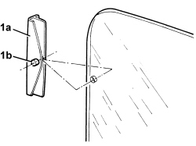
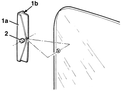

7010D12 REAR SIDE DOOR DESCENDING WINDOW GLASS FASTENING ELEMENT (ONE), LEFT OR RIGHT - R.R.
- Path
- Procedures > 70 FITTINGS > 7010 PASSENGER COMPARTMENT REAR SIDE DOORS > 7010D REAR SIDE DOOR WINDOW GLASSES > 7010D12 REAR SIDE DOOR DESCENDING WINDOW GLASS FASTENING ELEMENT (ONE), LEFT OR RIGHT - R.R.
- Kind
- repair procedure (removal / refitting; the operation number is the code)
- Applies to
- all engines; all production periods
- Interactive page
- https://sloeber94.github.io/elrnDB/#/939011174
Applies to: all engines; all production periods
 Removing
Removing
 Refitting
RefittingOp. 7010E62 REAR DOOR INNER REAR PANEL (ONE) LH OR RH - R R
Op. 7010E38 REAR SIDE DOOR INTERIOR HANDLE-R R
For vehicles with manual windows
Op. 7010E10 REAR SIDE DOOR INNER PANEL - R.R. OR REPLACE
Op. 7010D15 REAR SIDE DOOR DESCENDING WINDOW GLASS (ONE), LEFT OR RIGHT - R.R
1. Remove pin (1a) and remove fastening (1b).

Applies to: all engines; all production periods
Refitting
Removing- Check that the fastener is not damaged.
1. Fit fastener (1a) in its seat with retainer (1b) adjusted as shown in the figure.
2. Fit the pin in its seat and check it is aligned with the two side surfaces (to aid sliding).

Applies to: all engines; all production periods
Op. 7010D15 REAR SIDE DOOR DESCENDING WINDOW GLASS (ONE), LEFT OR RIGHT - R.R
Op. 7010E10 REAR SIDE DOOR INNER PANEL - R.R. OR REPLACE
Topics linked from this page (5)
- 7010D15 REAR SIDE DOOR DESCENDING WINDOW GLASS (ONE), LEFT OR RIGHT - R.R
- 7010D38 REAR SIDE DOOR MANUAL WINDOW OPENING MECHANISM HANDLE/RING NUT (ONE), LEFT OR RIGHT - R.R
- 7010E10 REAR SIDE DOOR INNER PANEL - R.R. OR REPLACE
- 7010E38 REAR SIDE DOOR INTERIOR HANDLE-R R
- 7010E62 REAR DOOR INNER REAR PANEL (ONE) LH OR RH - R R